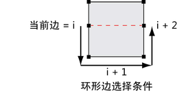
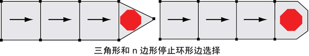
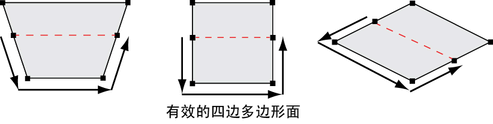

环形边是通过其共享曲面按顺序连接的多边形边的路径。通过环形边选择，可以在多边形网格中选择多条边，而不必逐个选择每条边。
环形边
在 Maya 中，环形边必须满足以下条件：
- 连接边的面必须为四条边（四边形）。
- 连接该序列的条件是序列中的下一条边为共享面的第 (i + 2) 条边，从当前边 (i) 按顺序确定。
- 边序列（环）可以在网格上形成开放或闭合路径。
- 起始边和结束边不需要共享四边面。


在双击选择网格上边的环（路径）时，初始边选择的任一方向上的所有相邻边也会沿网格的同一轮廓线被选定。仅当该选择无法确定共享面上对应的相邻边或到达网格的终点时，才会停止。

选择环形边
- 在场景视图中，在多边形网格上单击鼠标右键，然后选择“边”(Edge)。
- 在想要显示环形边的地方，单击多边形网格的某条边。
- 按住 Shift 键并双击沿同一环形路径的平行边。
环形路径中的所有边都会被选中。
选择部分环形边
- 在场景视图中，在多边形网格上单击鼠标右键，然后选择“边”(Edge)。
- 在想要开始选择环形边的位置，单击多边形网格的边。
- 按住 Shift 键并双击沿同一环形路径的另一条边。
会选择这两条边之间的所有边。